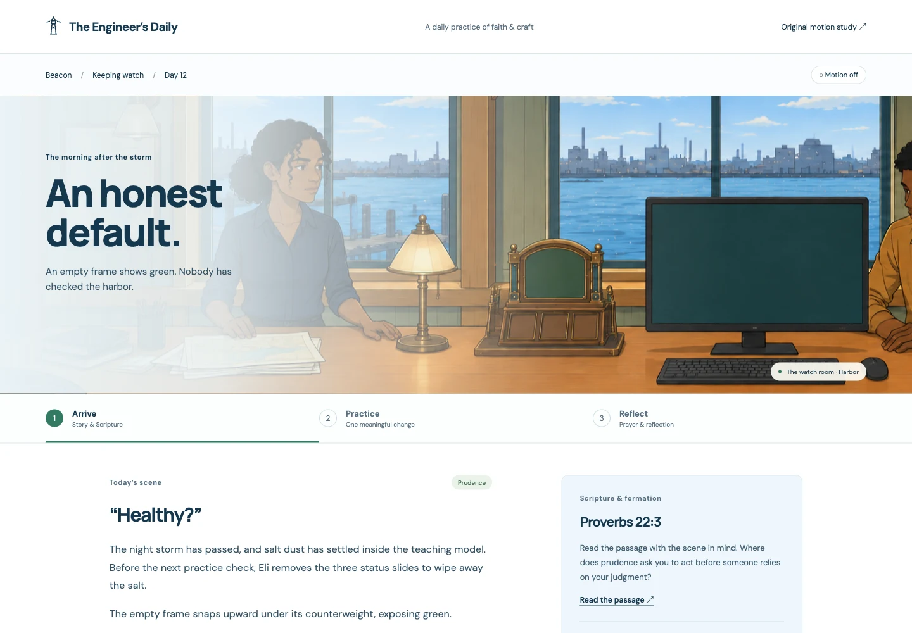

Building
The Engineer’s
Daily
A daily practice of
faith and craft.
Arrive→Practice→Reflect
Local prototype

thesuperhuman.us/building/the-engineers-daily
Beacon Day 12 · Arrival
Building
A daily practice of
faith and craft.
Arrive→Practice→Reflect
Local prototype

thesuperhuman.us/building/the-engineers-daily
Beacon Day 12 · Arrival